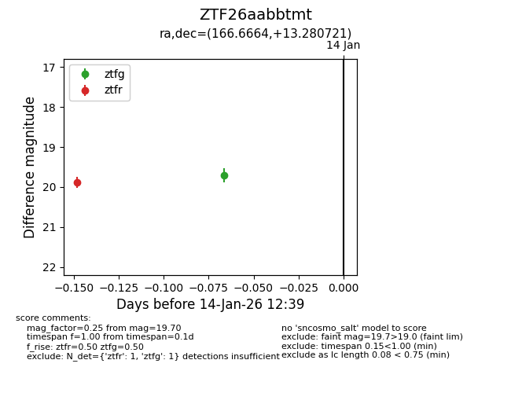
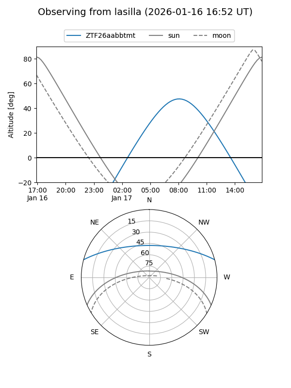
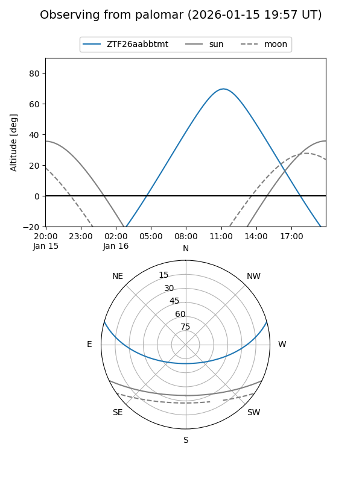
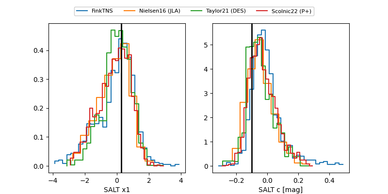

ZTF26aabbtmt
Target ZTF26aabbtmt at 2026-01-16 10:45
Aliases and brokers:
FINK: link
Lasair: link
ALeRCE: link
alt names
ZTF26aabbtmt (ztf,fink_ztf)
Coordinates:
equatorial (ra, dec) = 166.6664,+13.28072
equatorial (HMS+DMS) = 11:06:39.93,+13:16:50.59
galactic (l, b) = (237.2096,+61.88319)
Flags:
Photometry:
last ztfg=19.70, ztfr=19.88
1 ztfg, 1 ztfr detections
Lightcurve

Visibility


Additional plots
